Campaign - CIC - Install Navigation Road Map Database 2013
SI B65 22 12Audio, Navigation, Monitors, Alarms, SRS
December 2012
Technical Service
PERFORM THE PROCEDURE OUTLINED IN THIS SERVICE INFORMATION ON ALL AFFECTED VEHICLES BEFORE CUSTOMER DELIVERY OR THE NEXT TIME THEY ARE IN THE SHOP FOR MAINTENANCE OR REPAIRS.
SUBJECT
Service Action: CIC - Install Navigation Road Map Database 2013
MODEL
E70
E71
E82
E84
E88
E89
E92
E93
F06
F12
F13
F25
F30
Vehicles with option 609 (Navigation System Professional, CIC)
SITUATION
The Car Information Computer (CIC) road map database 2013 must be installed onto the CIC internal Hard Disc Drive (HDD).
AFFECTED VEHICLES
This Service Action involves certain E70, E71, E82, E84, E88, E89, E92, E93, F06, F12, F13, F25 and F30 vehicles which were produced from March 2012 to October 2012.
In order to determine whether a specific vehicle has had this Service Action completed or is affected by this Service Action, first check the B-pillar label for code number 634 or 628(previous similar campaign). If code number 634 or 628 has been punched out, the campaign has already been performed. If code number 634 or 628 has not been punched out, it will be necessary to utilize the "Service Menu" of DCSnet (Dealer Communication System) or the Key Reader. Based on the response of the system, either proceed with the corrective action or take no further action.
Important Note:
A campaign can be reserved in ISPA Light as "Pending" prior to submission of a claim. If you find this campaign reserved, please verify the reason before attempting to perform this repair.
PROCEDURE
Check the installed road map database using the Key Reader.
A. If the Key Reader shows "Road Map North America Premium 2013," no further action is required.
B. If the key reader shows "Road Map North America Premium 2012," refer to and perform the installation procedure as outlined in Attachment A.
NOTE:
When the INITIAL enabling code was already ordered and downloaded in ASAP, or the CIC NAV road map database 2012 has already been activated in an affected vehicle:
^ Use the REPAIR enabling code to install CIC NAV road map 2013.
IMPORTANT:
In such a case, it is no longer necessary to order the INITIAL enabling code "FSC CIC map, N. America 2013 INITIAL."
Only if the INITIAL enabling code has never been ordered or downloaded in ASAP, order the INITIAL enabling code "FSC CIC map, N. America 2013 INITIAL."
For information on how to order and download the INITIAL enabling code in ASAP, refer to Attachment B.
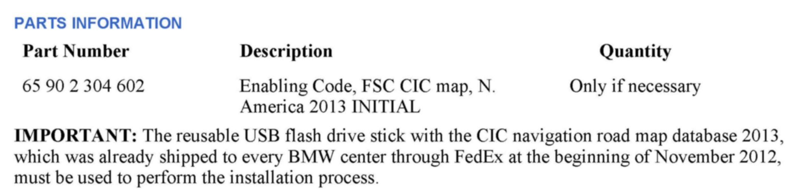
PARTS INFORMATION
LABEL INSTRUCTIONS
This Service Action has been assigned code number 634. After the vehicle has been checked and/or corrected, obtain a label (SD 92-417) and:
A. Emboss your BMW center warranty number in the middle of the label (1);
B. Punch out code number 634 (2), printed on the label; and
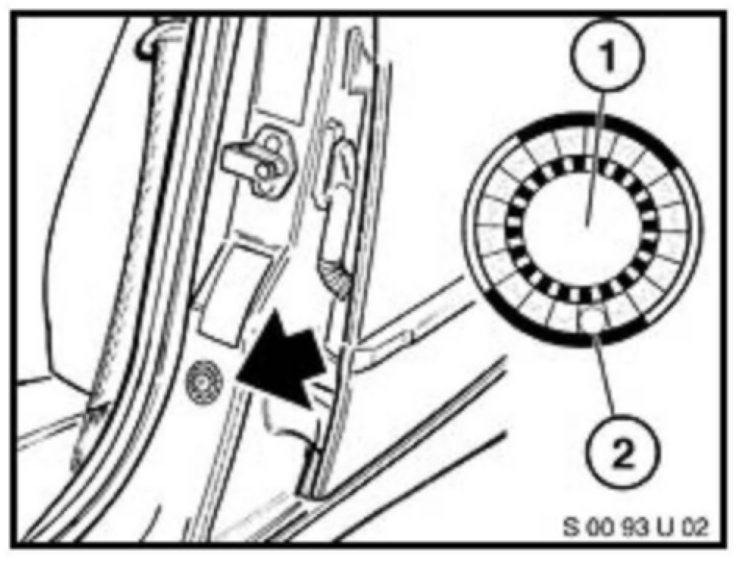
C. Affix the label to the B-pillar as shown.
If the vehicle already has a label from a previous Service Action/Recall Campaign, affix the new label next to the old one. Do not affix one label on top of another one, because a number from an underlying label could appear in the punched-out hole of the new label.
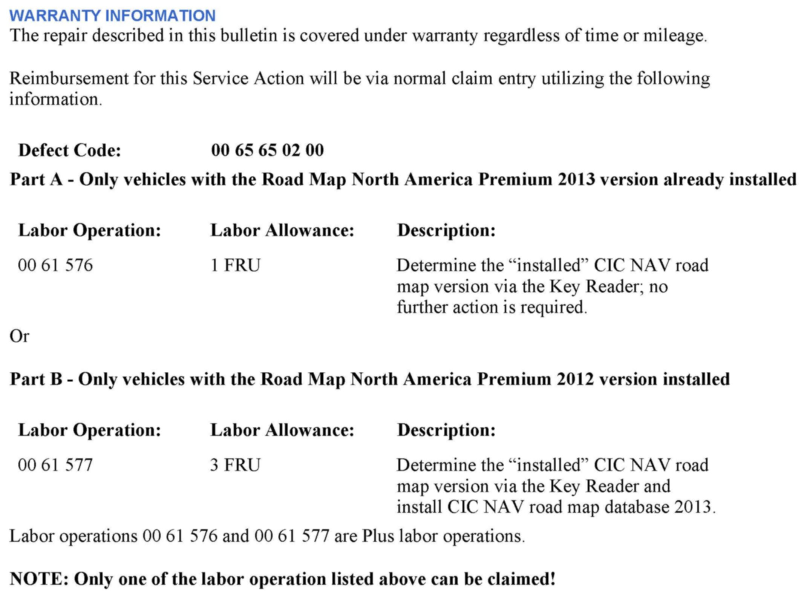
WARRANTY INFORMATION
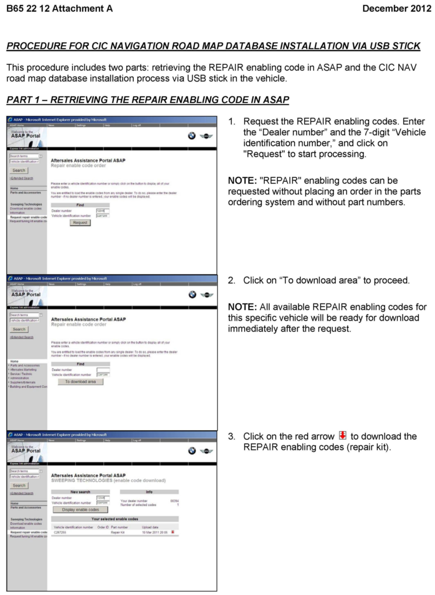
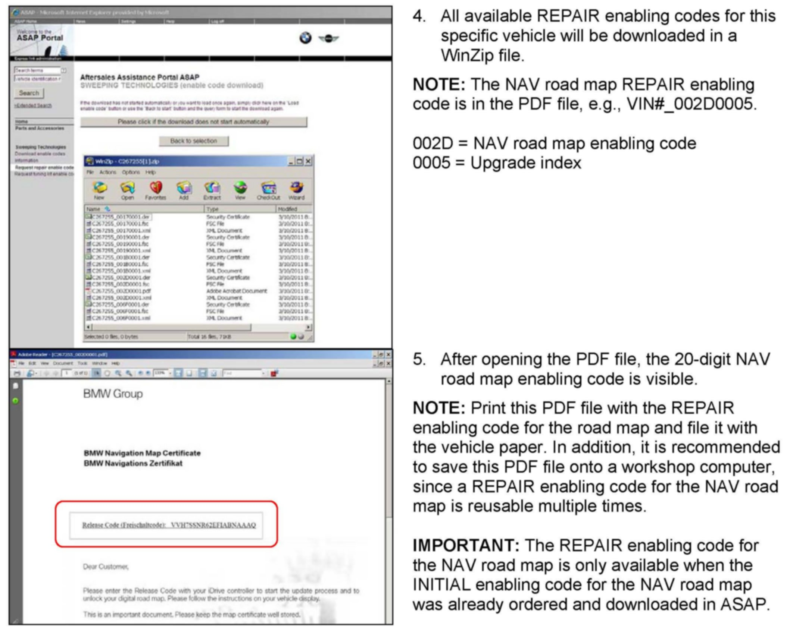
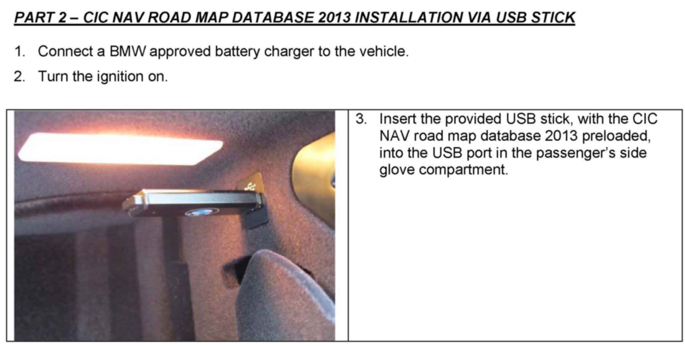
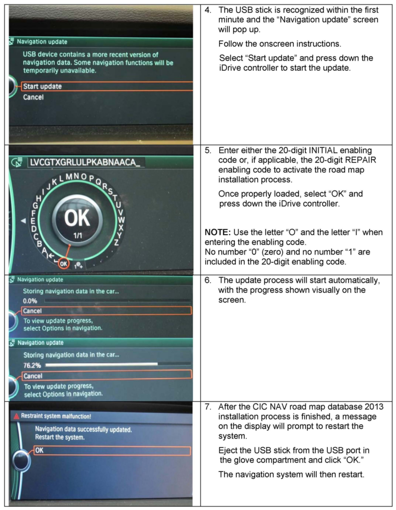
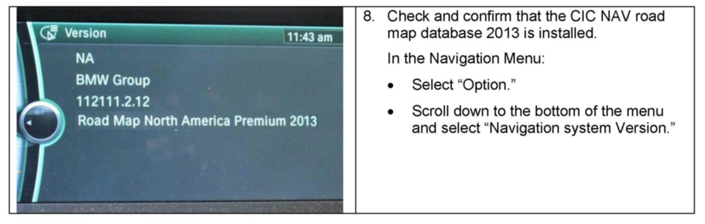
Attachment - A
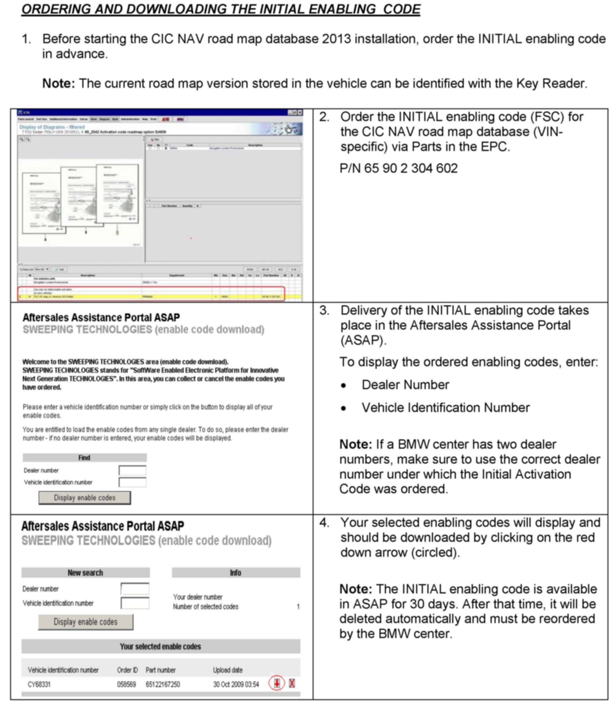
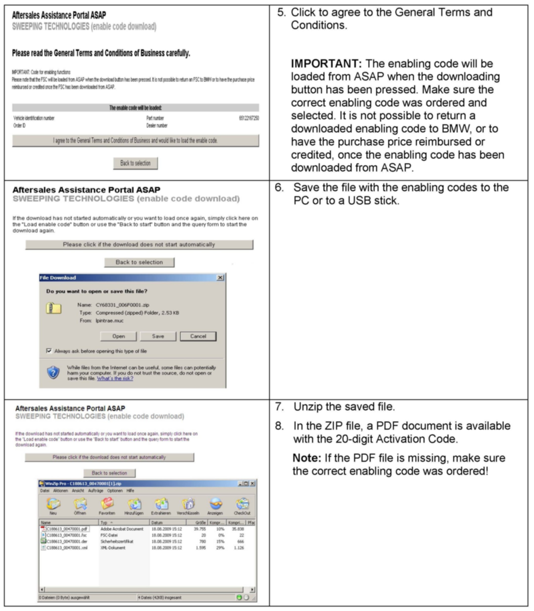
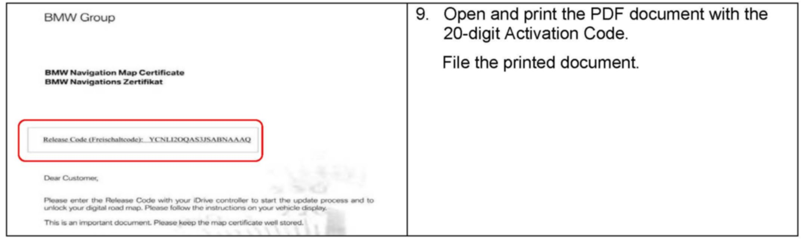
Attachment - B